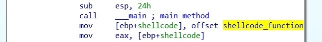
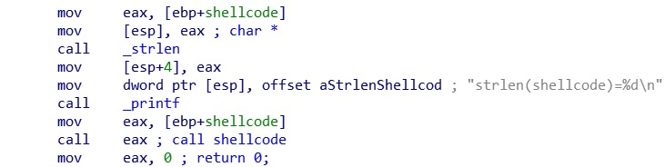
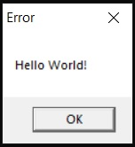
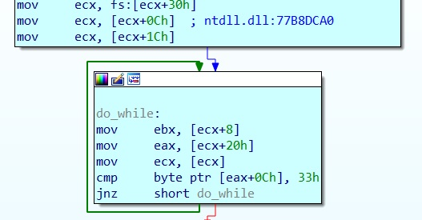
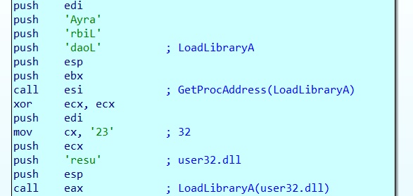
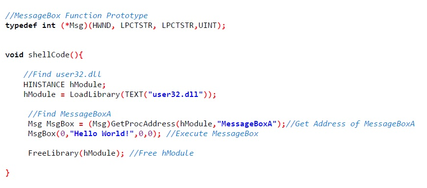

A simple example to demonstrate how shellcode works, and reverse a shellcode sample back into a working c program. I found a simple sample of shellcode on the Internet, which all it did was display a message box displaying, “Hello World!” to screen.
| Shellcode Example Reversing shellcode is not a simple task, here I will explain my process using a simple example, you will find the code here. |
 Code Code |
When we load the program into IDA PRO and open the main function, we see an unknown pointer to a location in memory. When we look at this more closely we see it’s an unreadable hex string, we can convert this into data to see the assembly code more clearly.
I have converted this variable pointer into a function and called it shellcode function. We can see from the below assembly this shellcode function is moved into a variable pointer which I call shellcode.
The next stage is go get the length of the shellcode. Using the strlen function the length of the code is gotten and placed into eax. This is passed as an argument to the printf function where it will output to screen “strlen(shellcode)=199”.
The shellcode pointer is passed into EAX. EAX is than called, where the shellcode_function will execute the shellcode, displaying the hello world messagebox.
 The Shellcode FunctionWe will now look more closely at the shellcode_function. The code for this function if you were to write the code in c language would be simple as: MessageBox(0,”Hello World!”,0,0);
Shellcode does not have access the API Library’s which are needed to get this shellcode to function correctly. The shellcode has to dynamically locate the API functions in order to work it does this using GetProcAddress and LoadLibraryA.
GetProcAddress searches for a library’s exports for the given name, symbol or ordinal number. LoadLibraryA loads a specific library and returns a handle. If shellcode had access to these two functions it can load any library on the system and find exported symbols giving it full access to the API.
We can step through this process in IDA PRO, by using the debugger, allowing us to understand what is happening.
Find GetProcAddressThe first function it has to find is GetProcAddress, which it does by using a do while loop.
The shellcode needs to get a handle for LoadLibraryA using GetProcAddress. Then next stage is to get a handle to user32.dll using LoadLibraryA.
I have recreated the shellcode below, making it more understandable why it needs Handle to the user32.dll and the MessageBox function. If you look below you will see the API GetProcAddress gets a handle to MessageBoxA and placed into a pointer to a function. This function is called, executing the messageboxA function, which will display the messagebox.
